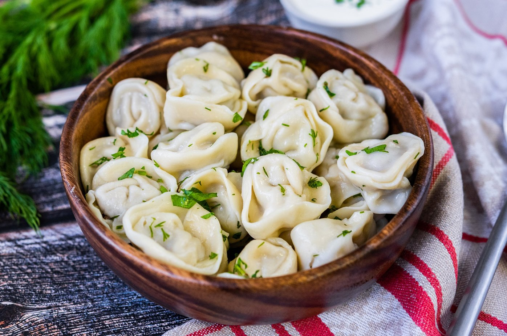

Кулинарные рецепты

Рецепт 1: Пельмени
Ингредиенты:
Шаги приготовления:
- Замесить тесто
- Начинить мясом
- Сварить в кипящей воде

Рецепт 2: Борщ
Ингредиенты:
- Свекла
- Картофель
- Морковь
- Лук
Шаги приготовления:
- Нарезать овощи
- Варить варенье
- Добавить квас
Рецепт 3: Тирамису
Ингредиенты:
- Бисквит
- Сливки
- Кофе
- Маскарпоне
Шаги приготовления:
- Замачивать бисквит в кофе
- Смешать сливки с маскарпоне
- Собрать слои